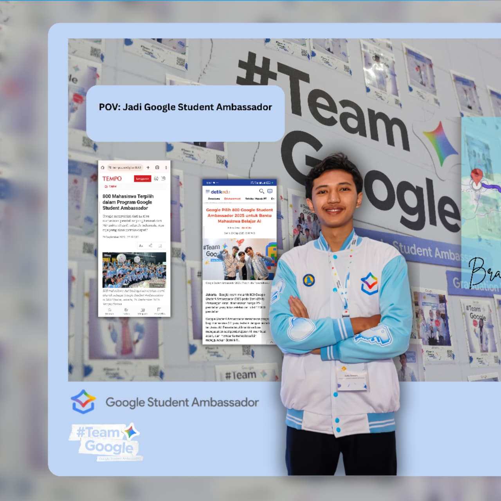

Zulfa Sowam
Mahasiswa Teknik Informatika - UNIMUS '24
Halo semuanya! Kenalin, aku Zulfa Sowam, mahasiswa Informatika Universitas Muhammadiyah Semarang (UNIMUS) angkatan 2024. Website ini sebenarnya berawal dari ruang personal buat ngulik-ngulik kode dan belajar hal baru. Tapi, aku harap tulisan dan project sederhana yang aku bagikan di sini juga bisa jadi referensi dan ngebantu teman-teman semua, ya!
Buat kalian yang juga lagi sama-sama berjuang—entah itu belajar ngoding, ngerjain tugas, atau ngejar mimpi—tetap semangat! Proses belajar emang kadang banyak error-nya, tapi justru di situlah kita bertumbuh. Keep learning and let's grow together!